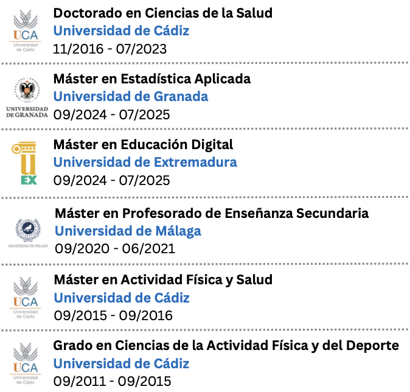

Autor
|
Alejandro Sánchez Delgado Formación: 
Desempeño profesional: Profesor de Formación Profesional y Educación Física en IES Los Cerros, Úbeda (Jaén) |
|
Alejandro Sánchez Delgado Formación: 
Desempeño profesional: Profesor de Formación Profesional y Educación Física en IES Los Cerros, Úbeda (Jaén) |
«Salvavidas» es un recurso educativo abierto diseñado para trabajar la prevención de lesiones deportivas y los primeros auxilios mediante una metodología de aula invertida.
Incluye contenidos teóricos, recursos visuales, actividades prácticas, situaciones simuladas de emergencia e instrumentos de evaluación.
Está dirigido al alumnado de 3.º de ESO, aunque puede ser adaptado por otros docentes a diferentes niveles educativos.
Esta licencia permite compartir y adaptar el material para diferentes contextos educativos, siempre que se reconozca su autoría, se indiquen los cambios realizados y las adaptaciones se distribuyan bajo la misma licencia.
La licencia se aplica a los materiales originales del recurso. Los contenidos de terceros conservarán sus respectivas licencias y deberán utilizarse respetando sus condiciones.
Para elaborar esta unidad se han utilizado recursos didácticos propios, ilustraciones educativas y herramientas digitales de creación y edición de contenidos.
Los protocolos de primeros auxilios se fundamentan principalmente en las recomendaciones científicas del European Resuscitation Council (2025), mientras que la vinculación curricular se basa en la normativa educativa de Andalucía (Orden de 30 de mayo de 2023).
| Título | SALVAVIDAS |
|---|---|
| Descripción | Los Salvavidas es una innovadora versión del famoso juego cluedo centrada en los primeros auxilios. Pretende que el alumnado aprenda conocimientos teóricos y prácticos de una forma lúdica. |
| Autoría | Alejandro Sánchez Delgado |
| Licencia | Creative Commons BY-NC-SA 4.0 |
Este contenido fue creado con eXeLearning, el editor libre y de fuente abierta diseñado para crear recursos educativos.
Obra publicada con Licencia Creative Commons Reconocimiento No comercial Compartir igual 4.0